Design Criteria
The goal of this final project was to "design, prototype, and digitally fabricate a bistable mechanical device that switches between 2 unique states and visually displays an indication of its current state." For this project we were to use digitally fabricated parts and create a physical product. The device was also to be used with one hand.
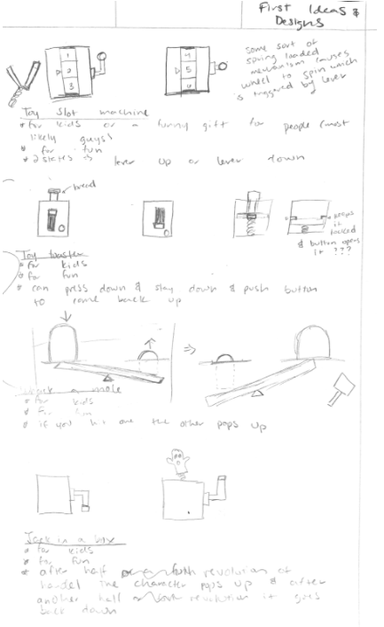User's Story
Our user would be a young child who is interested in cooking products, like a stove, fridge, or toaster. This simple mechanism would keep them occupied as it is very mesmerizing to make it go between the two states. It is also fun for kids to see the toast pop up!
From the User's Point of View: As a child, I want to be able to have a culinary-inspired and interactive product so that I can begin to develop my sensory baseline as I age, while also having fun.
Brainstorm
Here we brainstormed a wide variety of possible mechanisms and user stories for our final project. We ended up going with the toaster idea because we believed it to be a cute, simple, and fun toy. Additionally, I (Domo) love cooking so it was a way to incorporate my interests.
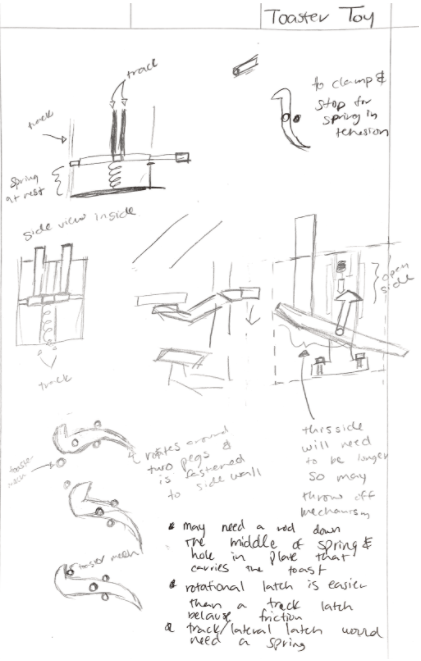Design Sketchs
Our design sketch that we decided to pursue for our toaster was a platform with some sort of latch mechanism that would keep it in its other stable state. Our inspiration for this came from a video we came upon, where a cabinet latch was created. On the upper half of the page, you can see the platform on top of a spring moving up and down. On the lower half, you can see some brief brainstorms on some possible ways to incorporate a latch.
More Latch Designs
The image above shows some possible latch designs. The image on the bottom left has a flatter top and more inclined slope for the tip. This design works by having the latch vertical when the platform moves down and then clasps onto it at the bottom. The latch on the bottom right performs the same function and explores a more curved shape to the latch. The second design is more curve all the way around and has a circular top. This works by having the latch slide down and hit it at such an angle that the latch would go up and hook around the platform.
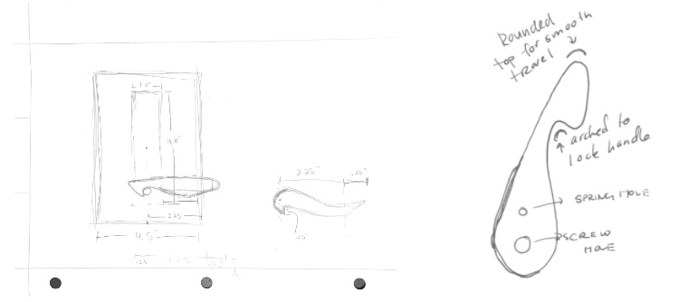Rapid Prototype
This prototype is based off of the dynamics of a real toaster with a platform that would travel down. However, unlike a real toaster that has a magnetic system on the bottom, we decided to go with some sort of other stopper, like a latch. However, during this phase we could not figure the functionality of the latch-based system out, but were able to nail it down during our functional prototype. On the right is the the outer box and platform, which is made out of cardboard. Two wooden dowels are attached to the platform to give it extra support when trying to move it up and down. Lastly, in the middle is the spring that has a wooden dowel through the middle of it so the spring doesn't buckle and a small cardboard box anchoring it so it doesn't move. More views of this prototype can be seen below.
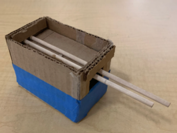 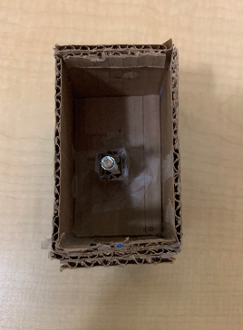 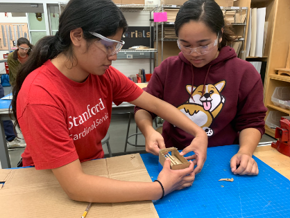Functional Prototypes
Functional Prototype 1
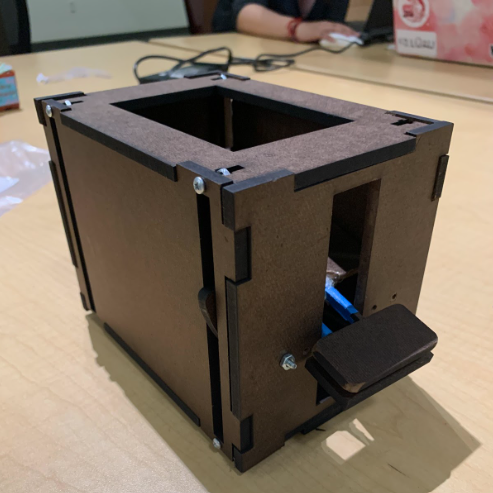 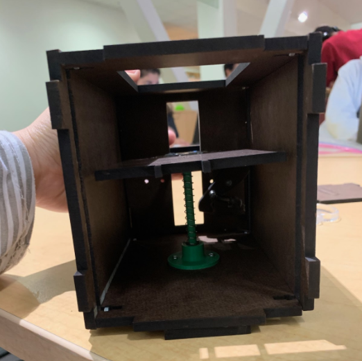 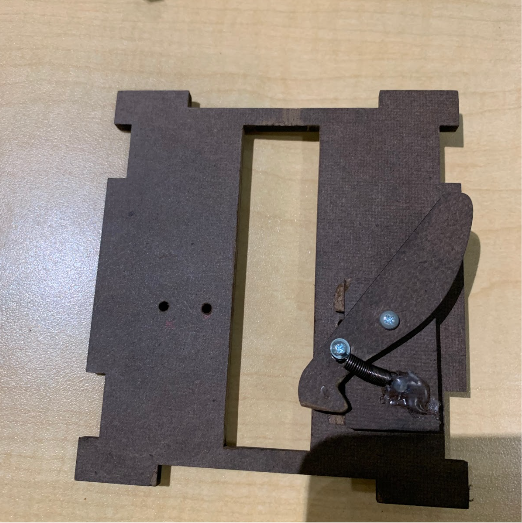Functional Prototype 2
Nearing completeness, we took our goals and lessons learned from last time and turned them into reality. We hoped to use a stronger material with less friction and to make the box fit better. As a result, one of the modifications came with size, making the the box became 4.5"x 4.5"x 3". Additionally, we made the box out of acrylic to test how the mechanisms would work with this material. It worked out to our liking so affirmed in using acrylic for our final material, but played around with the different colors to fit our user story better. For this prototype, we also 3D printed a cover for the handle, as seen in the top right video, but decided in coaching that if we were to 3D print it again it should be something more dynamic.
Note: We lost the top of the toaster in the video so we used a duron one.
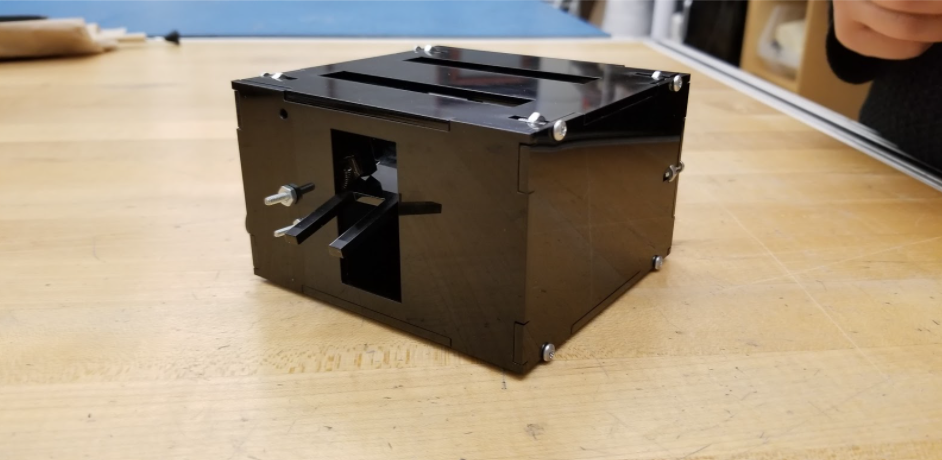 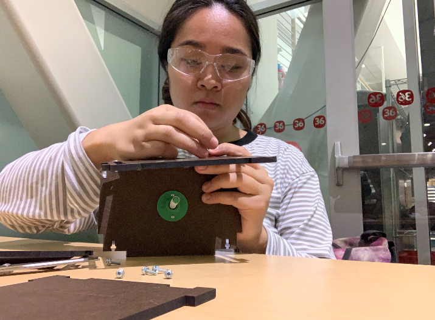Final Product
CAD
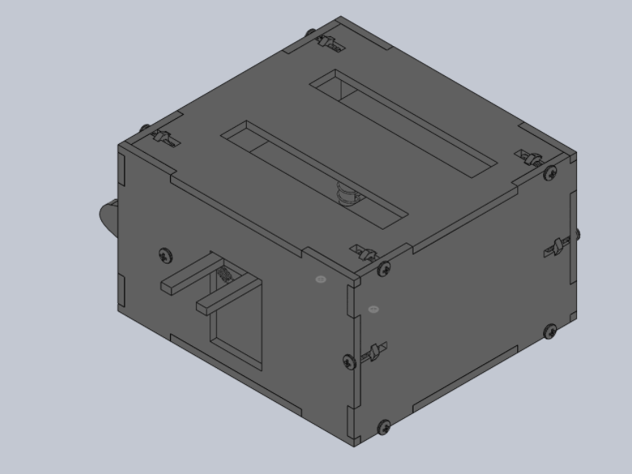 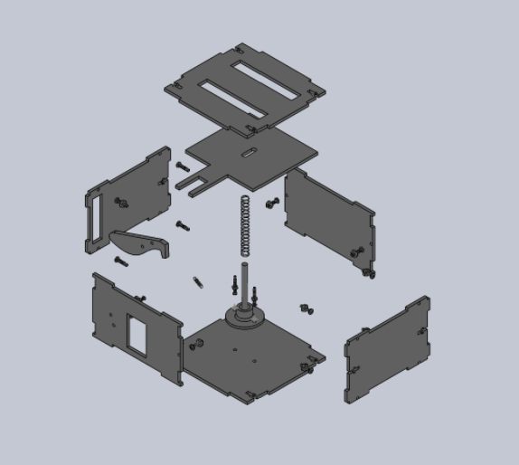Engineering Drawing
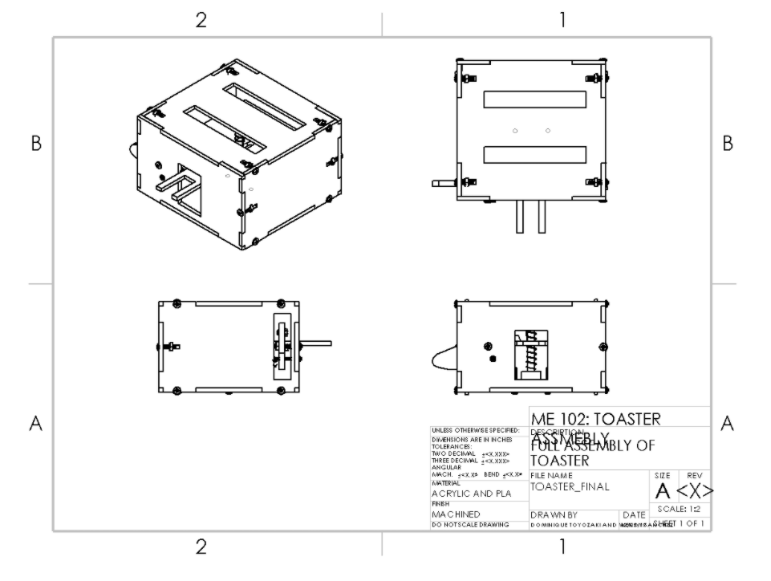 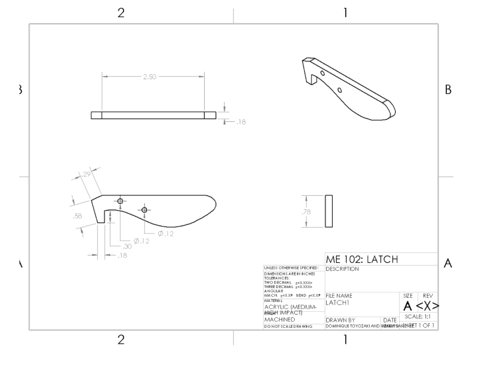 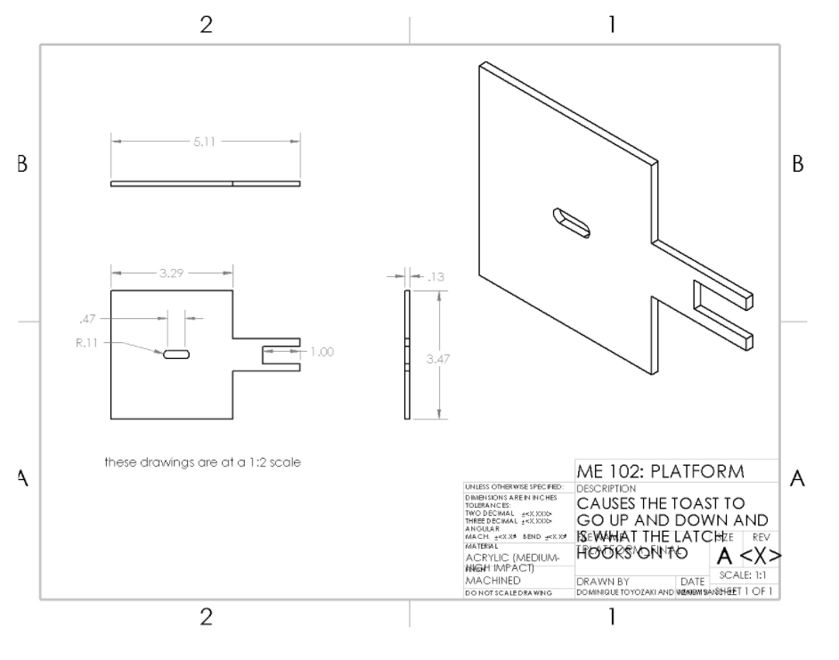 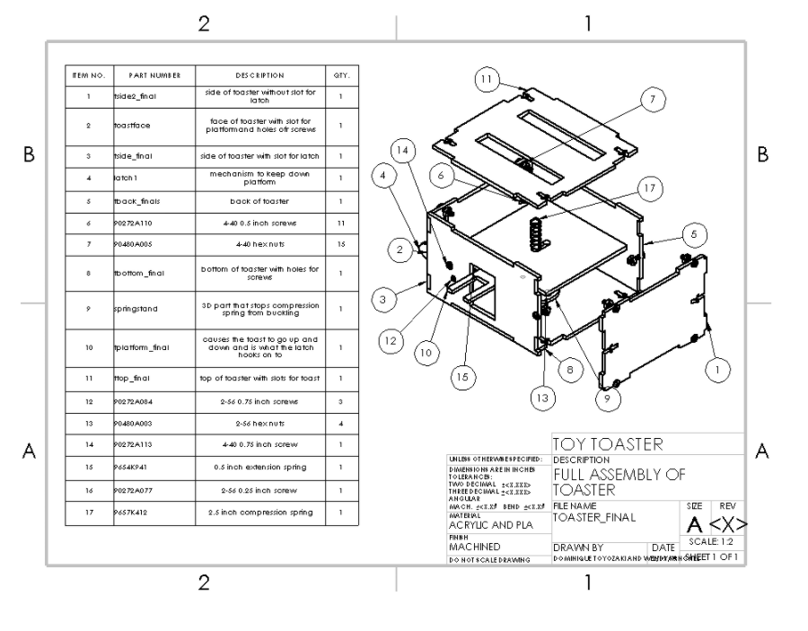Assembly
Our user's story revolves around being a child's toy. Because of this, we include several different textures in our final product such as the cover for the handle being made out of memory foam and felt and the toast that uses Velcro to stick to the platform (with permission from the teaching team). Additionally, we added stickers to the face to make the toaster look cuter and have more character.
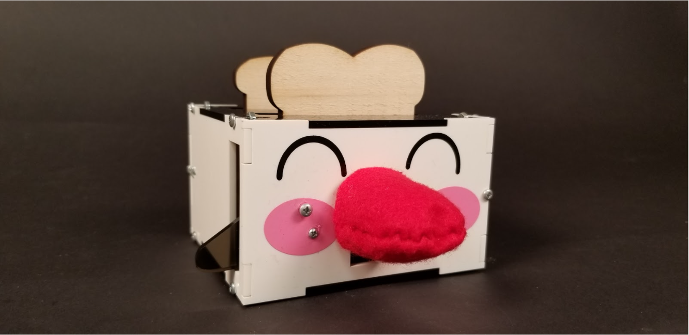 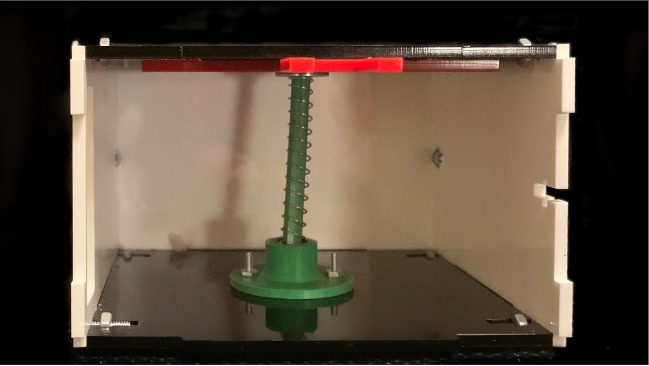 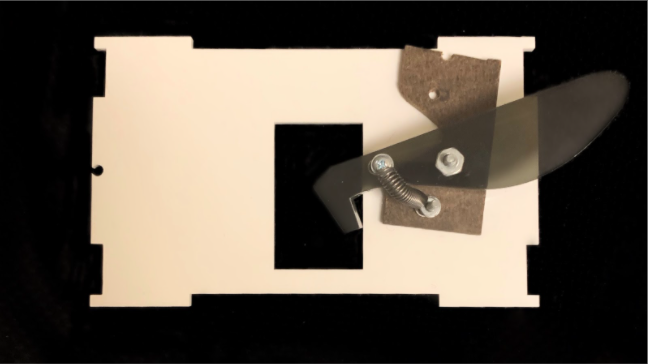Note:This was a group project for the class ME 102: Foundations of Product Realization